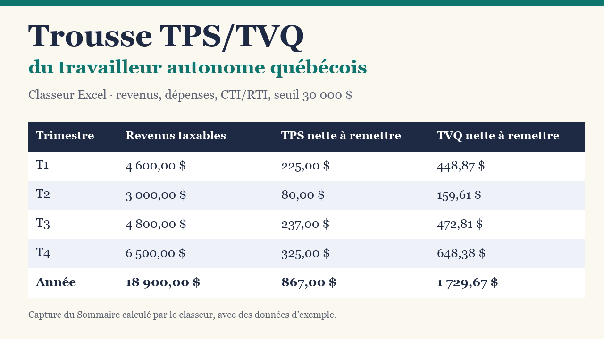

Vos taxes du trimestre, calculées pendant que vous facturez
Notez chaque facture et chaque dépense : la trousse calcule la TPS et la TVQ perçues, vos CTI/RTI, le montant net à remettre par trimestre et votre position face au seuil de 30 000 $.
14,00 $ · paiement unique, pas d'abonnement · téléchargement immédiat (.xlsx)
Acheter et télécharger — 14,00 $Paiement sécurisé et livraison par Gumroad. Remboursement complet pendant 30 jours, sans question. La page de paiement Gumroad est au nom de Calepin Fiscal.
Prochaine date limite des déclarants trimestriels : 31 janvier 2027 (trimestre d'octobre à décembre 2026 ; un dimanche : Revenu Québec accepte le jour ouvrable suivant). Le jour venu, les 5 chiffres à déclarer sont déjà calculés dans le Sommaire.

Capture du Sommaire réellement calculé par le classeur, avec des données d'exemple.
Essayez-le maintenant (démo gratuite)
Ce sont les mêmes règles que dans le classeur, pour un travailleur autonome inscrit aux fichiers de la TPS/TVQ. Changez les montants :
La démo couvre un trimestre et 5 lignes. La trousse en gère 500 de chaque, sur les 4 trimestres, avec le suivi du seuil et 11 catégories de dépenses.
Obtenir la version complète — 14,00 $Ce que vous évitez
- Remettre trop parce que des CTI/RTI ont été oubliés, ou trop peu parce que les repas ont été comptés à 100 % au lieu de 50 %.
- Découvrir trop tard que vous avez dépassé 30 000 $ et que vous auriez dû facturer les taxes.
- Reconstituer un trimestre complet la veille de l'échéance.
Ce que contient le classeur
| Onglet | À quoi il sert |
|---|---|
| Lisez-moi | Mode d'emploi en 5 minutes |
| Paramètres | Année, statut d'inscription, taux TPS/TVQ (modifiables si les taux changent) |
| Revenus | 500 lignes : TPS et TVQ perçues calculées seules, trimestre détecté selon la date |
| Dépenses | 500 lignes, 11 catégories, CTI/RTI admissibles (repas limités à 50 %) |
| Sommaire | Taxes perçues, crédits et montants nets à remettre par trimestre et pour l'année |
| Seuil 30 000 $ | Statut de petit fournisseur trimestre par trimestre, avec alerte à 80 % |
Questions avant d'acheter
Je ne suis pas inscrit à la TPS/TVQ, est-ce utile ? Oui : réglez « Inscrit » à Non. Les taxes perçues restent à 0, et l'onglet Seuil vous dit quand l'inscription devient obligatoire.
J'ai un Mac, ou seulement Google Sheets. Le fichier fonctionne dans Excel (Windows et Mac), Apple Numbers et Google Sheets. Aucune macro.
Et si les taux changent ? Les taux sont dans l'onglet Paramètres. Une modification suffit pour mettre à jour tous les calculs.
Est-ce que ça remplace mon comptable ? Non. La trousse prépare vos chiffres ; elle ne produit pas vos déclarations et n'est pas un avis fiscal. Elle suit la méthode régulière (pas la méthode rapide) et ne couvre pas les ventes hors Québec.
Je déclare une fois par année. Le Sommaire donne le total de l'année en plus de chaque trimestre : il sert aux déclarants annuels comme trimestriels.
Je suis sur mon téléphone. Vous pouvez acheter maintenant : le lien de téléchargement arrive aussi par courriel. Ouvrez ensuite le fichier sur votre ordinateur, dans Excel, Numbers ou Google Sheets.
Et l'an prochain ? Le fichier reste dans votre bibliothèque Gumroad : téléchargez une copie vierge pour la nouvelle année et changez l'année dans Paramètres. Aucun nouvel achat.
Qui est derrière Calepin Fiscal ? Un petit projet indépendant du Québec, qui publie aussi les calculateurs gratuits de ce site. Une question avant d'acheter : duchesneauprojet@gmail.com (réponse sous 5 jours ouvrables).
Et si ça ne me convient pas ? Répondez au courriel de reçu dans les 30 jours : remboursement complet, sans question.
Un classeur, un paiement unique de 14,00 $, utilisable toute l'année.
Acheter et télécharger — 14,00 $Pas encore décidé ? Essayez d'abord le modèle gratuit d'un trimestre : mêmes règles de calcul, sans inscription. Les formules sont aussi publiées si vous préférez construire votre propre fichier.
Règles appliquées : TPS 5 %, TVQ 9,975 %, CTI/RTI limités à 50 % pour les repas et frais de représentation, seuil du petit fournisseur de 30 000 $ (pages de Revenu Québec consultées en novembre 2026).